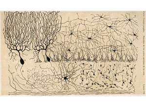
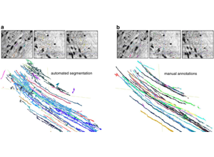

Slide 1 of 17

Human cortex · H01
Object segmentation over electron microscopy
H01 release · Lichtman Lab / Harvard & Connectomics at Google · CC BY 4.0
Shapson-Coe et al. (2024) · doi:10.1126/science.adk4858
Technical Course · Unit 03
EM Prep and Imaging
Every preparation step solves a specific problem and introduces a characteristic failure. Learn the pairs.
Slide 2 of 17
Session outcomes (60 minutes)
- Identify major artifact classes and their downstream failure modes.
- Define QA gates before large-scale reconstruction.
- Build a practical acquisition risk register with mitigation triggers.
Slide 3 of 17
Pedagogical arc
- Hook: artifact examples and scientific consequences.
- Model: prep chain + QA checkpoints.
- Practice: classify artifacts and set gate thresholds.
- Check: triage decisions under constrained throughput.
Slide 4 of 17
Acquisition chain (operational)
Fixation -> Staining -> Sectioning/block-face -> Imaging -> Stack assembly
Each stage introduces distinct, diagnosable error signatures.
Figure description and teaching notes
Walk the chain with its failure pairs from unit §1.
Fixation: slow or delayed fixation shows as swollen astrocytic processes and enlarged extracellular space — it can make segmentation easier and still distorts every geometric measurement.
Staining (rOTO: reduced osmium, thiocarbohydrazide, osmium, then uranyl acetate and lead aspartate): weak membrane contrast is the dominant cause of automated merge errors — the most expensive prep failure.
Embedding: dehydration shrinks tissue roughly 5–20% linearly; every absolute length is affected, so prefer within-volume ratios.
Sectioning: lost sections, folds, knife chatter, compression. Block-face: charging; FIB-SEM curtaining.
Imaging: SNR improves with the square root of dose — doubling SNR costs about 4x the acquisition time.
Slide 5 of 17
Before EM: what a light microscope could draw

A hand-drawn neuroanatomy plate from the light-microscopy era: whole-cell morphology, no synapses.
Source: assets_outreach source decks, Module12 L3 S02. Historical/context visual.
Figure description and teaching notes
Instructor script: "Everything on this plate is visible with a light microscope and sparse staining. Nothing on it tells you who connects to whom. The prep chain we are about to walk through exists to get from this to membranes 20 nm apart."
Then ask where, in the chain on the previous slide, errors become irreversible. Target answer: fixation and staining — contrast that is not in the tissue cannot be recovered by re-imaging.
Slide 6 of 17
Automated against manual, on the same tissue

The only way to learn your prep's merge rate is to push a pilot volume all the way through segmentation and proofreading.
Source: assets_outreach source decks, Module13 L2 S09. Historical/context visual.
Figure description and teaching notes
Instructor script: "Panel a is automated segmentation, panel b is manual annotation of the same field. The difference between them is the proofreading bill your prep protocol will generate."
Tie to the non-negotiable rule in unit §3: run a pilot reconstruction on something like 100 x 100 x 100 µm before full acquisition — align, segment, skeletonize, and have a human proofread a handful of neurons. It costs perhaps 1–2% of the project and is the only way to discover a bad staining protocol while you can still change it.
Slide 7 of 17
Real data: one section of human cortex
- H01: a ~4 mm wedge of human temporal cortex.
- 5,019 sections at 33.9 nm mean thickness.
- 1.8 PB raw acquisition; 326 days of 61-beam microscope time.
Source: H01 release (Lichtman Lab, Harvard; Connectomics at Google), CC BY 4.0 · Shapson-Coe et al. 2024, doi:10.1126/science.adk4858 · site render.
Figure description and teaching notes
Instructor script: "This is one of 5,019 sections. Imaging all of them took 326 days on a 61-beam microscope and produced 1.8 petabytes." Note the H01 case study's warning: 1.8 PB is the raw acquisition and 1.4 PB the aligned volume — the two get conflated constantly, so say which you mean.
Work the unit's acquisition-time arithmetic alongside: 800 µm cube at 4 x 4 x 40 nm is 8 x 10^14 px; at 0.2 gigapixels per second that is about 46 days of continuous imaging, about 77 at 60% uptime — before sectioning, QA or re-imaging.
Slide 8 of 17
Real data: the resolution you must reach everywhere
- Same sample at native 4 nm: membranes, mitochondria, vesicle clouds.
- Synapse-finding needs this resolution across the whole volume.
- The field of view here is ≈3.6 µm across.
Source: H01 release (Lichtman Lab, Harvard; Connectomics at Google), CC BY 4.0 · Shapson-Coe et al. 2024, doi:10.1126/science.adk4858 · site render.
Figure description and teaching notes
Instructor script: "Every membrane you see here was made visible by osmium. If the staining had been ten percent weaker, which of these boundaries would a network still find?"
This is the slide to land the asymmetry: noise that raises the split rate is recoverable; faint membranes that raise the merge rate are much less so. When trading dose against speed, protect membrane contrast.
Slide 9 of 17
Artifact taxonomy with downstream impact
- Physical (tear/fold/chatter): topology discontinuities.
- Signal (charging/contrast drift): false boundaries, missed synapses.
- Geometric (misalignment/seams): apparent neurite breaks/merges.
Figure description and teaching notes
The cost distinction from unit §2 matters more than the taxonomy: a labor artifact means the reconstruction will be correct eventually, after proofreading hours; a data-loss artifact (lost section, fold, tear, severe beam damage) makes some question permanently unanswerable in that region. Report them separately — one quality score conceals exactly the distinction the project needs.
Diagnostic habit: ask which coordinate system the defect lives in. Follows block geometry -> staining penetration. Follows acquisition order -> beam or detector drift. Follows anatomy -> possibly real tissue composition.
Slide 10 of 17
QA gates before full ingest
- Signal stability: SNR and intensity drift bounds.
- Geometric consistency: seam residual and alignment error limits.
- Completeness: missing/damaged section accounting.
- Metadata completeness: acquisition parameters and provenance.
Figure description and teaching notes
Example gates from the unit, stated in advance with numbers: stop if more than 2 consecutive sections are lost; review handling if cumulative loss exceeds 1%; stop if membrane contrast-to-noise drops more than 20% from baseline; flag sections with more than 5% fold area; re-run alignment if the 99th-percentile residual exceeds one voxel at native xy.
Instructor script: "The numbers are yours to set. What is not optional is setting them before you start, because a threshold chosen after seeing the data is not a threshold."
Slide 11 of 17
Pilot-first strategy
- Run pilot segmentation/QC on representative blocks.
- Quantify expected merge/split burden before full-volume processing.
- Adjust prep protocol if projected correction load is unacceptable.
Slide 12 of 17
Throughput vs fidelity tradeoff
- Higher throughput without gates amplifies downstream correction cost.
- QA cost upfront is often cheaper than post hoc proofreading.
- Teach teams to model this explicitly, not intuitively.
Figure description and teaching notes
Use the unit's triage check-yourself on a 20,000-section volume: rank (a) 4 scattered lost sections, (b) 4 consecutive lost sections, (c) charging on 15% of sections, (d) 10% weaker membrane contrast throughout. Answer, roughly b > d > c > a. Four consecutive losses is a 160 nm gap that cuts the volume in two; weaker contrast raises merges everywhere and cannot be fixed by re-imaging. The lesson: distribution matters more than count.
Slide 13 of 17
Misconceptions to correct
- "Artifacts can be cleaned up later without scientific cost."
- "Good visual quality implies quantitative adequacy."
- "Metadata can be reconstructed after acquisition."
Figure description and teaching notes
On the third: per-tile timestamps are what let you ask whether a defect follows block position, anatomy or acquisition time. Without them you cannot ask the question at all, and they cannot be recovered later.
Slide 14 of 17
Activity: risk register workshop
For three artifact types, specify:
- detection metric,
- alert threshold,
- mitigation action,
- stop/go decision owner.
Slide 15 of 17
- Pass: each artifact has metric + threshold + mitigation.
- Strong: downstream impact quantified in scientific terms.
- Flag: qualitative descriptions without operational triggers.
Slide 16 of 17
Pair with this unit
- Denk & Horstmann (2004), PLOS Biology, doi:10.1371/journal.pbio.0020329 — serial block-face SEM.
- Kasthuri et al. (2015), Cell, doi:10.1016/j.cell.2015.06.054 — ATUM-based saturated reconstruction.
- Shapson-Coe et al. (2024), Science, doi:10.1126/science.adk4858 — multibeam acquisition at 1 mm³.
Slide 17 of 17
Bridge
Next unit: infrastructure for robust reconstruction once acquisition is trusted.